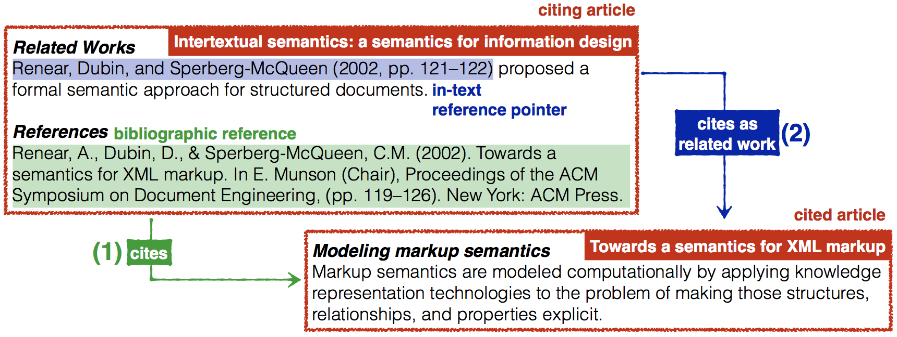
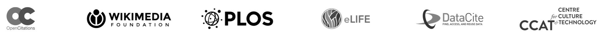
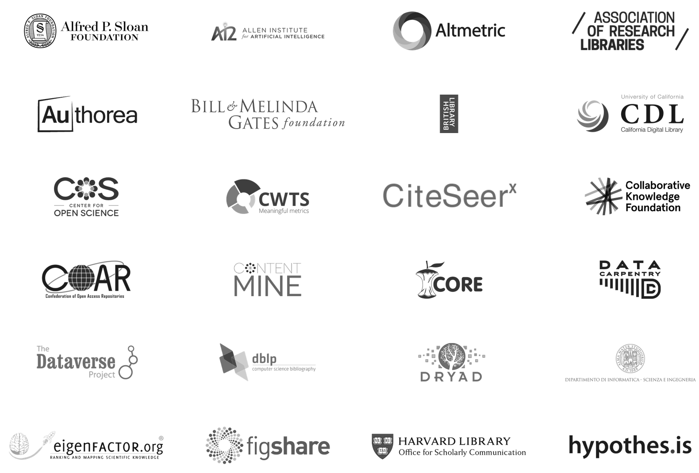
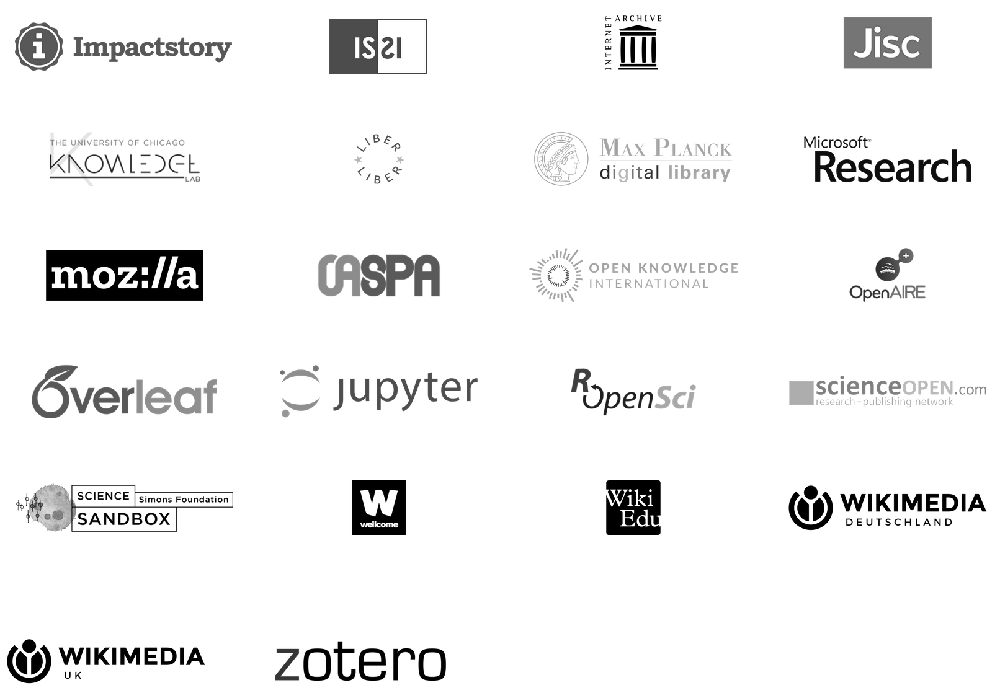
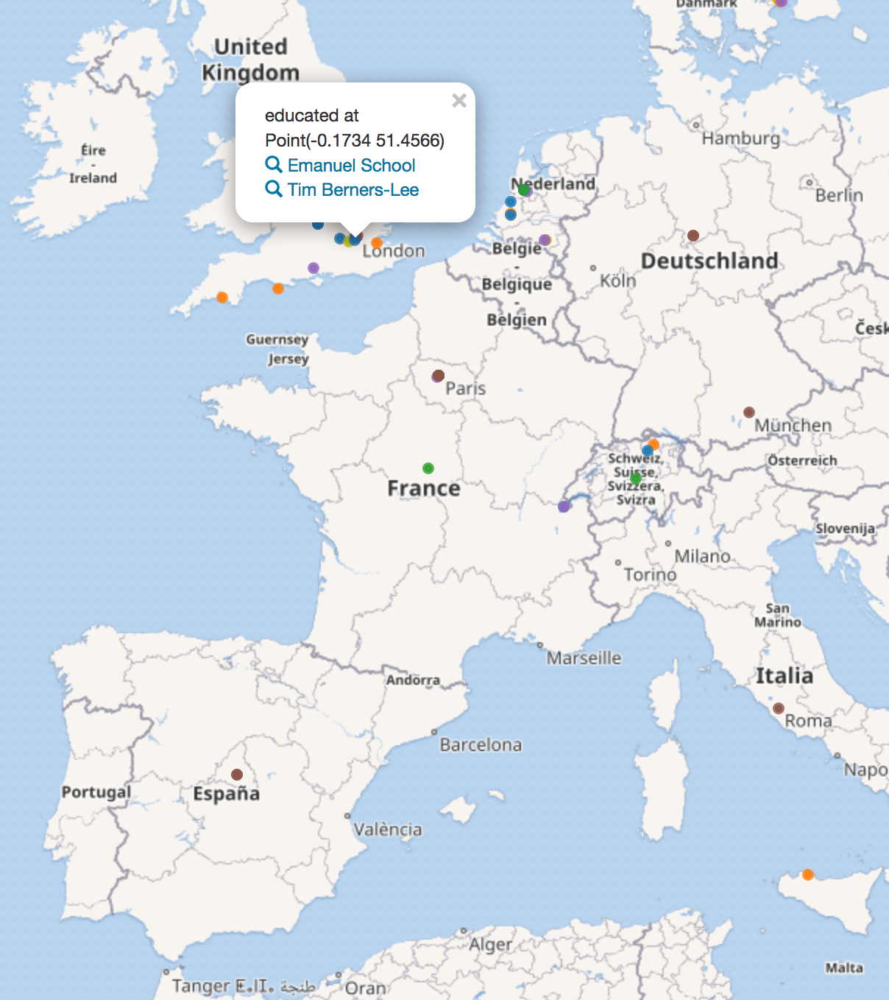
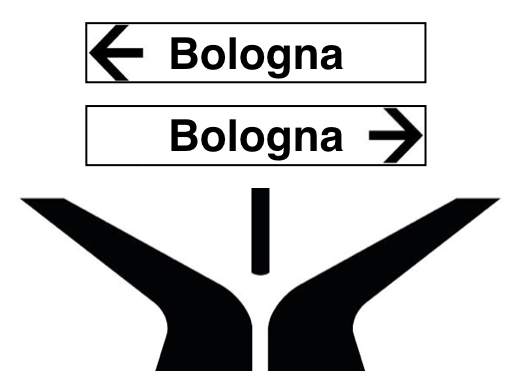
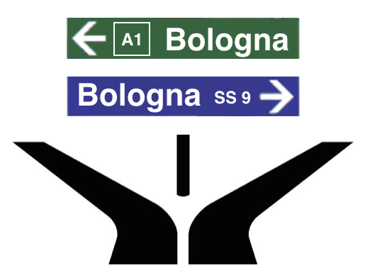
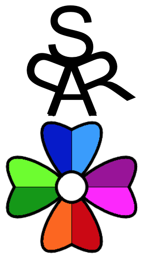
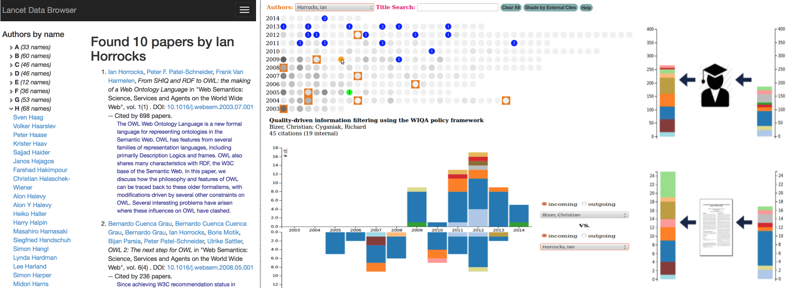

To cite
Oxford dictionary: refer to (a passage, book, or author) as evidence for or justification of an argument or statement, especially in a scholarly work
Isaac Newton (1675): If I have seen further, it is by standing on the shoulders of giants
Citations are unanimously recognised as crucial for knitting together our scientific and cultural knowledge
References and citations
Everything is a reference
Semantic overload!
 A citation is a conceptual directional link from a citing entity to a cited entity
A citation is a conceptual directional link from a citing entity to a cited entity
Kinds of citations
Citations instantiated by the inclusion of a bibliographic reference (1) are different from those defined by an in-text reference pointer + citation context (2)

Generate a plain citation link
Generate a citation link with a specific citation function
Plain citations: current status
A citation index is an index of (plain) citations between publications
Some are freely accessible but not downloadable, e.g. Google Scholar
The most authoritative by institutions worldwide, namely Scopus and Web of Science, can be accessed only by paying significant access fees
Usually are more oriented towards human readability rather than machine readability and data re-use
What about machine-readable open citation data?
I4OC
The Initiative for Open Citations (I4OC, https://i4oc.org) is a collaboration between scholarly publishers, researchers, and other interested parties to promote the unrestricted availability of scholarly citation data
Goal: promote the availability of data on citations that are:
structured - available in common and machine-readable formats
separable - no need to access the source bibliographic products
open - freely accessible and reusable
Pathway to open citations
Publishers deposit their reference data with Crossref, but the default state for the data is closed (i.e. not accessible through the Crossref REST API)
However one email is enough to make the data open
Challenge: persuade a group of influential publishers to release their data
What happened: before I4OC launch (6 April 2017), 1% of publications in Crossref with open references
Publishers
49 scholarly publishers have opened their references, including the following major ones:
Commercial publishers - Association for Computing Machinery, BMJ, De Gruyter, eLife, EMBO Press, Hindawi, IOS Press, PeerJ, Pensoft Publishers, Portland Press, Public Library of Science, Springer Nature, Taylor & Francis, Wiley
University and scholarly presses - Cambridge University Press, Cold Spring Harbor Laboratory Press, Company of Biologists, Edinburgh University Press, MIT Press, Rockefeller University Press
Learned societies - American Association for the Advancement of Science (AAAS), American Physical Society, American Society for Cell Biology, International Union of Crystallography, Proceedings of the National Academy of Sciences (PNAS), Royal Society of Chemistry, The Royal Society
Founders and stakeholders

 
Crossref REST API
API call: http://api.crossref.org/works/10.1007/978-3-319-46547-0_18
{
"message": {
"DOI": "10.1007/978-3-319-46547-0_18",
"title": ["FOOD: FOod in Open Data"],
"reference": [{
"key": "18_CR1",
"unstructured": "Falco, R., Gangemi, A., Peroni, S., Vitali, F.: Modelling OWL ontologies
with Graffoo. In: The Semantic Web: ESWC 2014 Satellite Events, pp. 320-325
(2014). http://dx.doi.org/10.1007/978-3-319-11955-7_42",
"DOI": "10.1007/978-3-319-11955-7_42",
"doi-asserted-by": "crossref"
}, {
"key": "18_CR2",
"unstructured": "Ferragina, P., Scaiella, U.: On-the-fly annotation of short text fragments
(by Wikipedia entities). In: Proceedings of the 19th ACM International
Conference on Information and Knowledge Management (CIKM 2010), pp.
1625-1628 (2010). http://dx.doi.org/10.1145/1871437.1871689",
"DOI": "10.1145/1871437.1871689",
"doi-asserted-by": "crossref"
}, ... ],
...
}
}FAIR data principles

FAIRness of citation data
Crossref citation data are not following all the FAIR data principles
F1: no persistent identifier is defined for metadata - just API URLs
I1: no use of formal language for knowledge representation - just JSON
I2: the vocabulary used in JSON is not FAIR
R1.2: only a bit of provenance, no change tracking
R1.3: use of specific JSON made for that purpose
While Crossref data are the main building block for FAIR open citation data, how can we reach FAIRness?
OpenCitations
The OpenCitations Corpus (OCC, http://opencitations.net) is a LOD repository of CC0 citation data
It provides >11M citation links from ~260,000 citing articles to ~6M cited resources + provenance information
Data accessible via HTTP URI (content negotiation), SPARQL endpoint, and monthly dumps (on Figshare)
Reuse of external APIs (Europe PubMed Central, Crossref, ORCID) and models (SPAR Ontologies)
More info: One year of the OpenCitations Corpus
, talk on October 24, 2017, 10:50, room Stolz 2
WikiCite
WikiCite is an initiative to build a bibliographic database in Wikidata to serve all Wikimedia projects
Wikidata now includes 36M citation links using the cites (P2860) Property in Wikidata
All the data released in CC0
Additional tools built by the community, e.g. Scholia
Citation functions: what's up
From https://doi.org/10.1108/JD-12-2013-0166:
When the citation links exist but are not described, the traveller through the city of scholarly publishing travels without specific directions, and will get lost in the maze of bridges that form the citation network
 
The Citation Typing Ontology (CiTO, http://purl.org/spar/cito) enables characterization of the nature or type of citations, both factually (cito:usesMethodIn, cito:extends, etc.) and rhetorically (cito:agreesWith, cito:disputes, etc.)
Semantic Lancet
Semantic Lancet (http://semanticlancet.eu) is a prototype focused on building LOD on scholarly publications
Its contains bibliographic data, abstract and citations

LORC
The Linked Open Research Cloud (https://linkedresearch.org/cloud) is a new project which makes available an inbox to receive Linked Data Notifications about scholarly communication resources
CC0 expected for notifications + provenance information
Notifications must meet the requirements of certain notification data shapes: article, annotations, citations
CiTO properties (i.e. subproperties of cito:cites) are suggested for specifying citation links
Journey to FAIR-I land
Key benefit for open citation data from I4OC home:
The creation of a public citation graph to explore connections between knowledge fields, and to follow the evolution of ideas and scholarly disciplines.
Having one single FAIR dataset with the complete citation graph of the whole scholarly literature is not feasible
Each initiative should provides its partial data and links its resources with those included within other citation datasets
Interlinking should be an additional mandatory I
in FAIR if we want to reach a real public and global citation graph
Call for action
Authors and journal editors:
ask your publisher to free citation data
contribute actively to community initiatives with your citation data (e.g. share them in LORC)
Publishers:
join I4OC (https://i4oc.org/#faqs)
it is in the publisher's interests - better discoverability and use of its published content, both subscription access and open access